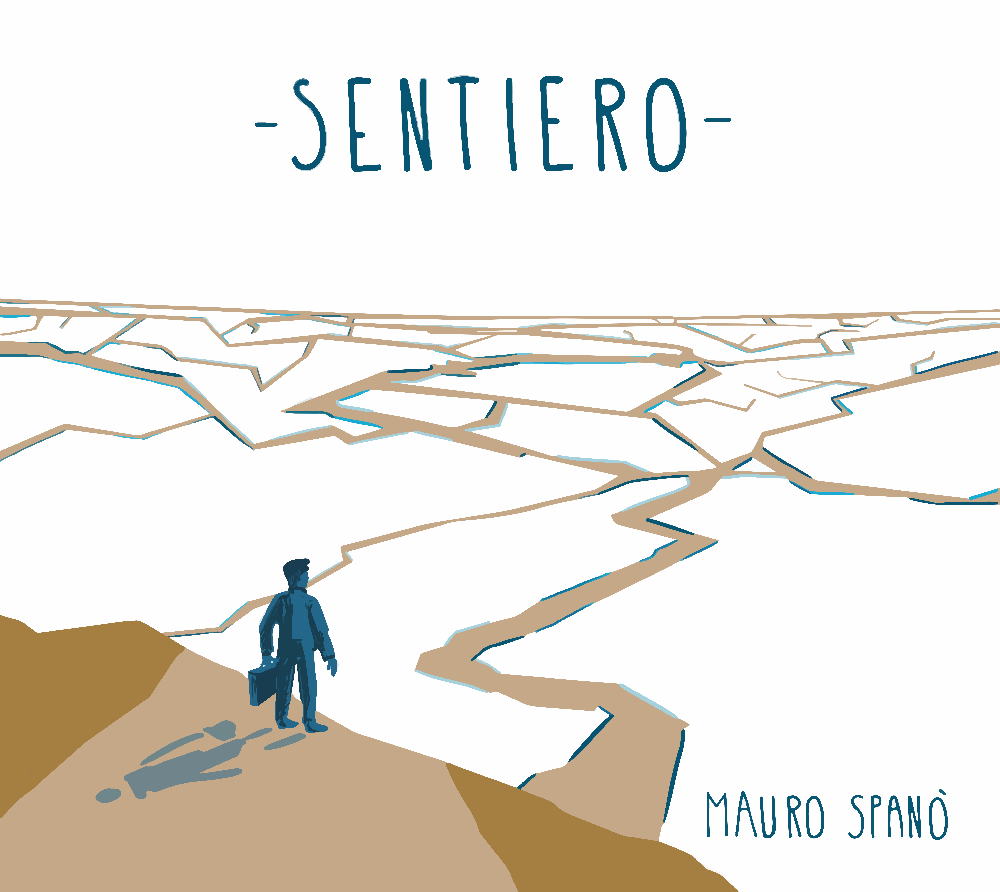
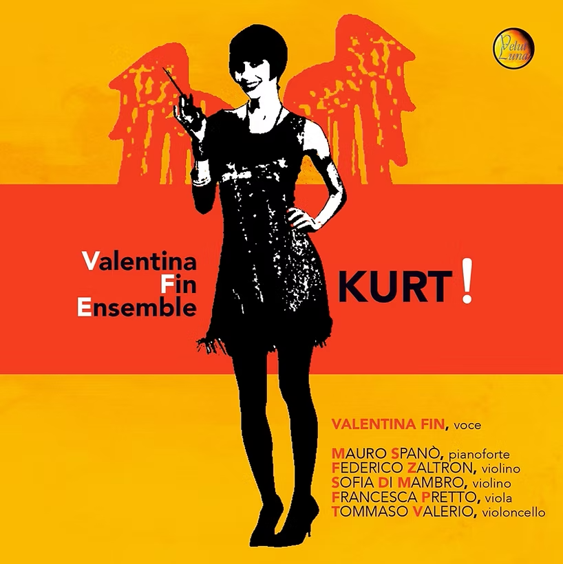

Works

Sentiero
2023 • Encore Music
Mauro Spanò’s debut as a band leader is a journey of profound inner exploration, a path where artistic research blends closely with personal discovery. Symmetrically divided between four original tracks and four arrangements of works deeply dear to the author, the album features the extraordinary participation of clarinitest Gabriele Mirabassi on selected tracks. The result is a soundscape capable of evoking, as highlighted by critics, “impressionistic elucubrations and Scandinavian fascinations.”

Kurt!
2021 • Velut Luna
A project conceived by vocalist Valentina Fin that explores and develops a research dedicated to the figure of Kurt Weill, the celebrated German composer of the early twentieth century. The ensemble, carrying a chamber-like breath, pairs a classical string quartet with a piano and voice duo. The arrangements, curated by Mauro Spanò, re-elaborate the original scores or develop entirely from scratch in an unprecedented and contemporary key. The same atmospheres, hovering between jazz and avant-garde classical music, also come alive in the original pieces written specifically for the ensemble, inspired by the poems of Weill’s historical collaborator, Bertolt Brecht.

Oscura Era
2021 • Wow Records
The second recording project by RAME, written and recorded during the difficult period of the pandemic. The album inherits from its predecessor the link between text and literary works but moves toward less rigid compositional structures, leaving ample space for free improvisation. The arrangements push toward territories close to Free Jazz and contemporary art music, while the title itself draws inspiration from James Bridle’s essay “New Dark Age.”

Rame
2018 • Emme Record Label
The recording debut of the RAME quintet, a project born in 2016 within the halls of the Conservatory of Vicenza. Moving from a typically jazz matrix founded on the pursuit of improvisation and interplay, the album collects original compositions signed by all members of the group. The tracks and lyrics draw deep inspiration from timeless works of Italian literature and culture. The album closes with the title track, an extemporaneous improvisation that marks the beginning of the sonic experimentation the quintet would carry forward in the following years.